~/videos
Démonstrations
Des démos courtes, de l'interface au modèle en action. Les vidéos s'ouvrent sur Google Drive.
To-Do List Pro
Présentation de l'application de gestion de tâches : CRUD, export multi-formats, mode sombre, statistiques et musique d'ambiance.
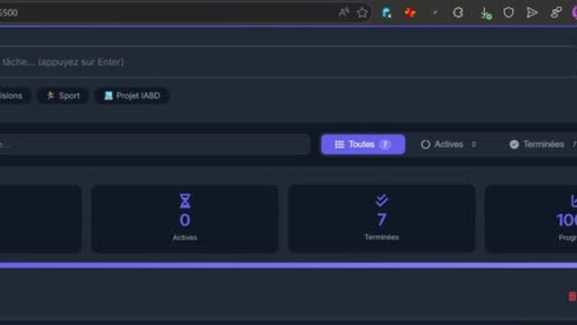
Regarder sur Google DriveWeatherApp
Application météo professionnelle avec prévisions précises, graphiques interactifs, mode sombre, export multi-formats (JSON, CSV, PDF) et géolocalisation automatique.
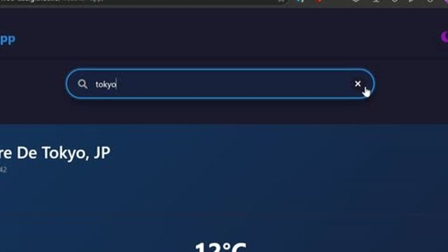
Regarder sur Google DriveSentiment Analysis
Présentation du pipeline complet d'analyse de sentiments : prétraitement du texte, vectorisation TF-IDF, entraînement de 3 modèles (Logistic Regression, Naive Bayes, Random Forest) et évaluation : 88,5 % d'accuracy avec la régression logistique, puis prédiction sur de nouvelles critiques.
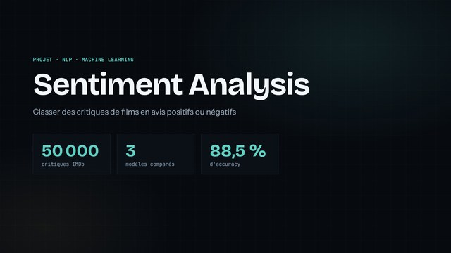
Regarder sur Google DriveDJ Audio Player
Présentation du lecteur audio/vidéo : lecture locale (31 formats), recherche YouTube, extraction audio MP3, visualiseur DJ animé et contrôles avancés.
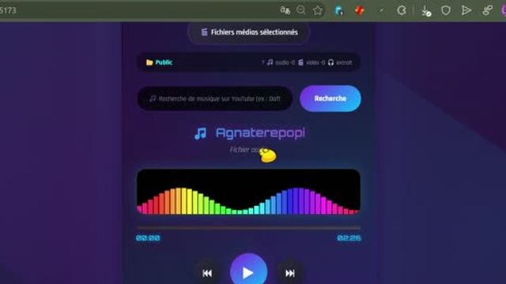
Regarder sur Google DriveTaskHub Pro
FullStackPrésentation de la plateforme de gestion de tâches en équipe (Flask, React, MySQL) : tableau de bord, filtres, Kanban par glisser-déposer, commentaires et historique, mode sombre, puis le code de l'authentification JWT et du contrôle des rôles.
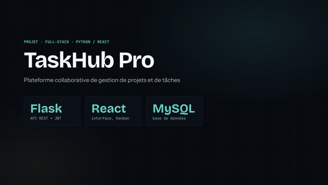
Regarder sur Google DriveFileRepair
Présentation de l’application FileRepair : upload de fichiers corrompus, analyse détaillée, réparation ou récupération partielle, suivi en temps réel, dashboard et téléchargement du fichier traité.
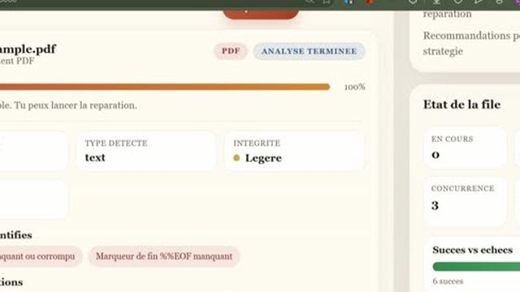
Regarder sur Google DriveMailCraft
Présentation de l'interface de marketing par email (React, TypeScript) : tableau de bord, campagnes, éditeur d'emails par blocs avec glisser-déposer et brouillon sauvegardé, import de modèles, segments d'abonnés.
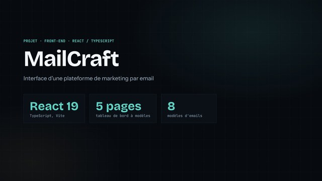
Regarder sur Google DriveCosmic Codex
Présentation de la bibliothèque de snippets en 3D (Next.js, Three.js) : galaxie de planètes-langages, recherche et filtres, fiches détaillées, favoris, puis le code de la scène et des favoris.
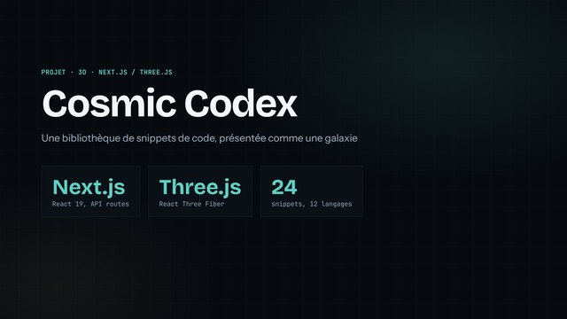
Regarder sur Google DriveAG News · DistilBERT
Présentation du projet de classification d'articles de presse en 4 rubriques : données, baseline TF-IDF et régression logistique (90,6 %), fine-tuning de DistilBERT (92,3 %), comparaison des modèles et test sur des phrases inédites.
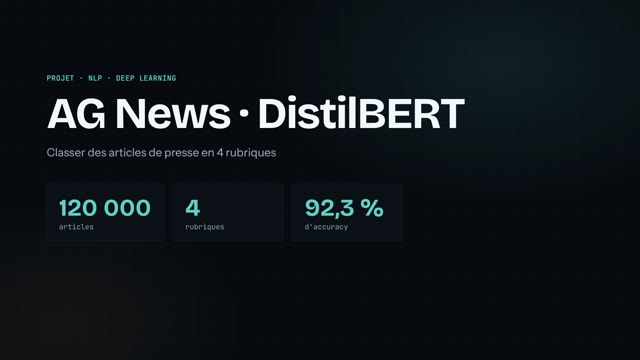
Regarder sur Google DriveChurn télécom
Présentation du projet de prédiction des départs d'abonnés (2,3 millions de clients) : exploration des données, KNN avec choix de k, régression logistique régularisée (AUC 0,892), comparaison des modèles et recommandation métier.
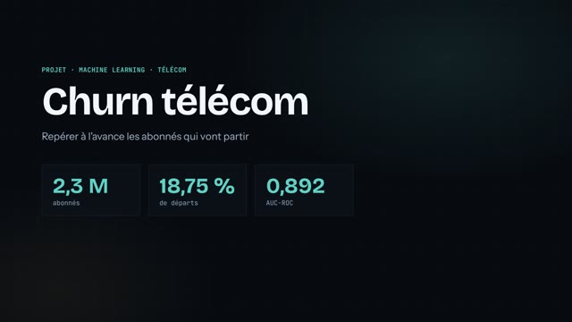
Regarder sur Google DriveMeme Generator
Présentation de l'application fullstack : création de mèmes (texte haut/bas), galerie interactive, likes, commentaires, profils utilisateurs, authentification JWT et partage social.
CycleCare v2
Présentation de l'application de suivi du cycle menstruel : tableau de bord avec l'anneau du cycle, calendrier coloré par phase, saisie « Ma journée », statistiques et courbe de température, journal, puis le code du calcul des phases. Disponible sur le Web, Android et Windows.
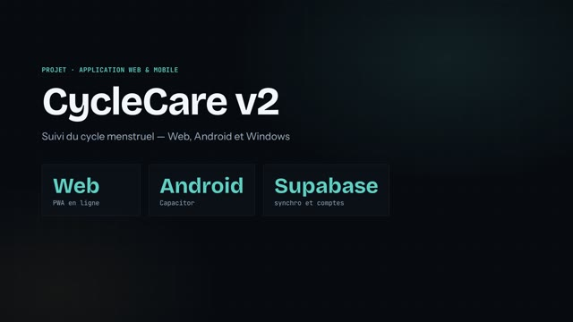
Regarder sur Google DriveNeonTube
Présentation du téléchargeur de vidéos YouTube (Python, PyQt5, yt-dlp) : connexion par mot de passe local, choix de la qualité de la 4K au MP3, galerie avec recherche, paramètres, puis le code du hachage PBKDF2 et du suivi de progression. Versions Windows et Android.
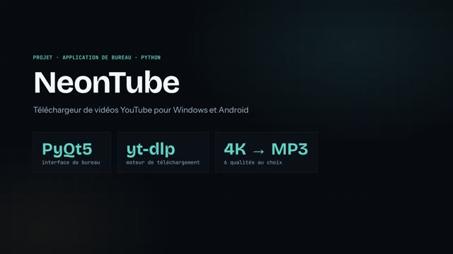
Regarder sur Google DriveGestion Bibliothèque
Présentation de l'application web de bibliothèque (PHP, MySQL) : connexion administrateur, tableau de bord animé, gestion des livres, des auteurs, des réservations et des emprunts, puis le code du contrôle des rôles et de l'emprunt d'un livre.
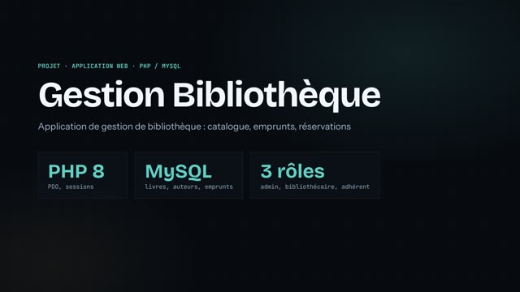
Regarder sur Google Drive